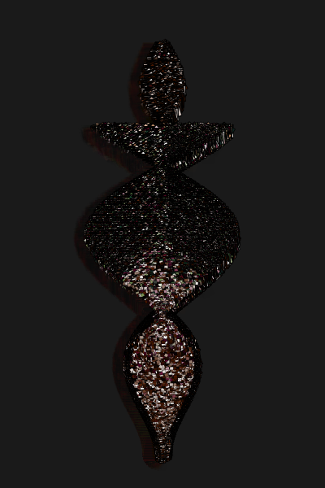

{% include JB/setup %}

<div class="free-page">
<p>Here is a collection of generated art pieces and experiments.

Please see my <a href="art/2016/09/14/on-generative-art">essay</a> in the blog too.</p>

<hr/>
<h3>Contour figures</h3>
<p></p>
<p>Is it possible to generate images that "speak", figures with aesthetic or
emotional appeal? This "Venus" gets its feminine shape from two interposed sine functions.
Its head is modeled separately.</p>

</div>
